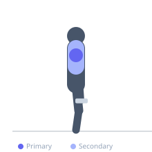

Exercise guide / Lu Raises
Lu Raises
Lu raises are a shoulder conditioning drill popularized by Chinese weightlifting champion Lu Xiaojun. The exercise combines a front raise with a lateral raise in a single continuous motion, moving a plate or light dumbbells from in front of the thighs, out to the sides, and then overhead in one fluid arc, before reversing. The movement targets the anterior, lateral, and posterior deltoids through a comprehensive range of shoulder motion and builds shoulder endurance and coordination.
Primary muscles
deltoid anterior
deltoid lateral
deltoid posterior
Secondary muscles
trapezius upper
supraspinatus
Stabilizers
infraspinatus
subscapularis
transverse abdominis
Equipment
Weight Plates
Optional
Dumbbell (Fixed)


Starting position
- Stand upright holding a weight plate (or light dumbbells) in front of the thighs with arms extended. Use a very light load — this is a conditioning and mobility drill.
Setup
- Select a very light plate (5–10 kg maximum for most lifters) or light dumbbells. The movement is primarily for shoulder conditioning, not maximal load.
Steps
- Step 1: Hold the plate in front of the thighs at arm's length.
- Step 2: Raise the plate in a wide arc upward and to the sides (lateral raise pattern) until it reaches overhead.
- Step 3: Lower back down by reversing the same arc — out to the sides and back down in front.
- Step 4: Alternatively, raise the plate forward (front raise) and then out to the sides and overhead in a continuous sweep.
Coaching cues
- Think about painting a wide rainbow arc with the plate
- Keep the elbows slightly bent throughout the full movement
Breathing
- Breathe naturally; exhale on the upward arcs.
Range of motion
- Full arc from thighs to fully overhead in a smooth, controlled sweep.
Tempo
- Smooth and continuous — not tempo-counted
Common mistakes
- Using too much weight, which limits range of motion and defeats the purpose
- Shrugging the traps excessively at the top
Safety
- Keep the weight very light — this is a shoulder health and coordination drill
- If pain is felt in the shoulder at any angle, reduce load or stop
Training
- endurance: 10–20 reps
- endurance: 3–4 sets
- Rest: {'endurance': 45}